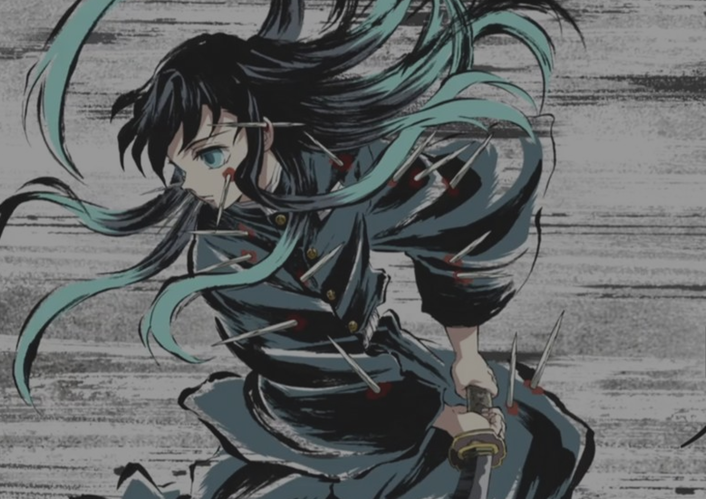
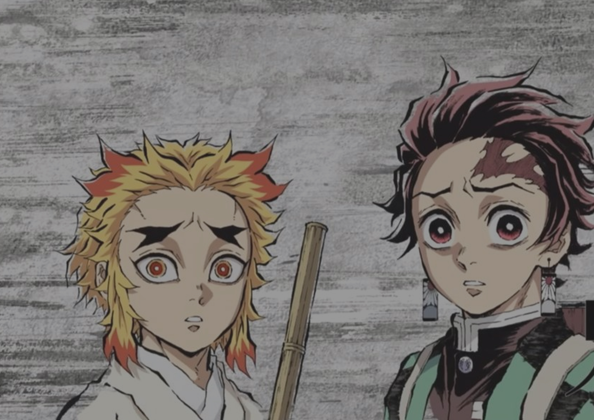
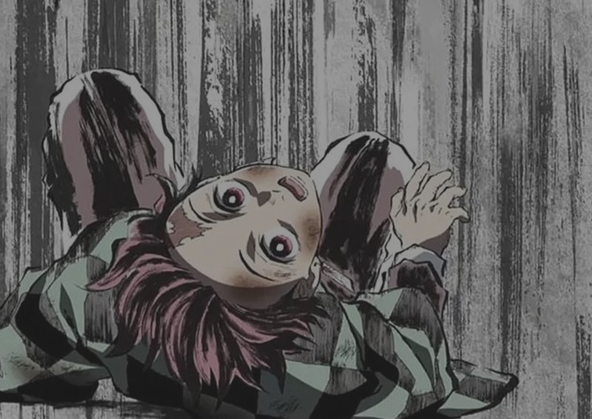
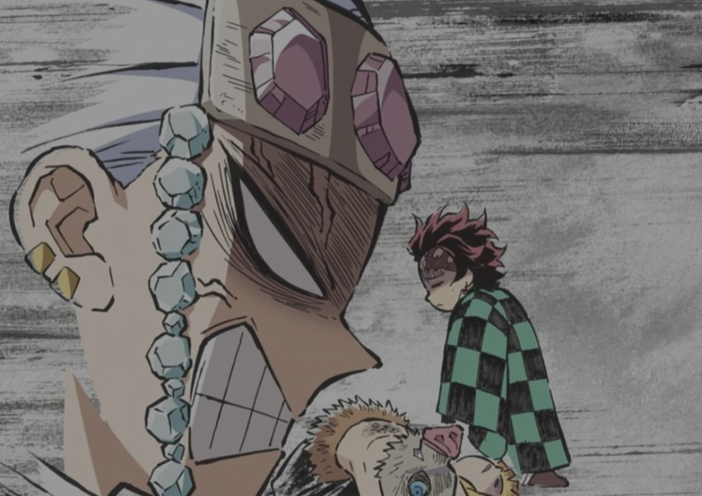
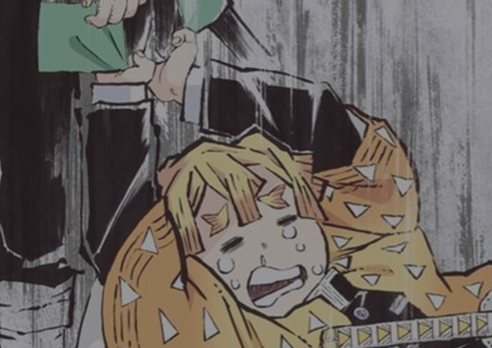

Curiosidades

El anime es producido por Ufotable, un estudio japonés famoso por su animación de alta calidad.

Haruo Sotozaki dirigió la serie animada, continuando su colaboración con Ufotable.

Akira Matsushima adaptó el estilo de Gotouge al formato animado manteniendo la esencia del manga.

La banda sonora está compuesta por Yuki Kajiura y Go Shiina.

Las temporadas adaptan todos los arcos principales, incluyendo la batalla final contra Muzan.